ISO C++ Committee Meeting • 8–13 June 2026
Mendel University in Brno (MENDELU)
Zemědělská 1665/1, 613 00 Brno
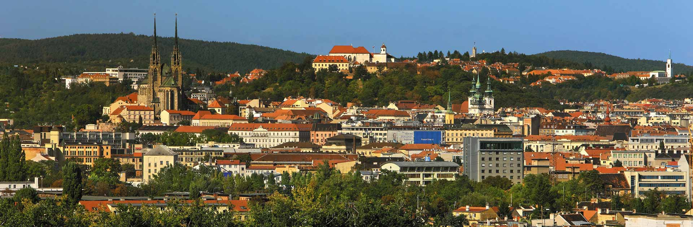
Welcome to Brno, a compact and student-friendly city with excellent public transport, vibrant cafés and a strong culture. This guide is intended to help international attendees of the ISO C++ committee meeting navigate Brno comfortably and discover interesting places during the week.
The local currency is the Czech koruna (CZK, Kč). While many places accept cards, it is still useful to carry a small amount of cash for cafés, pubs or smaller shops.The exchange rate is approximately 21 CZK per 1 USD and 25 CZK per 1 EUR.
Brno’s public transport system is fast, reliable, and fully integrated, covering trams, buses, trolleybuses, and selected regional train services. Most of you will primarily use tram lines 9 and 11, which connect key areas around MENDELU.
Tickets are time-based and valid across all city transport modes within the IDS JMK network.
Tickets can be purchased in several convenient ways:
If you use a contactless payment card onboard, remember to tap your card every time you board a vehicle, including when changing between lines. The system automatically records your journeys and calculates the lowest possible fare at the end of the day. For example, if the cost of individual tickets exceeds the price of a 24-hour ticket, you will only be charged the 24-hour fare. For more info check https://www.pipniajed.cz/en.html
The following applications are recommended for planning journeys and purchasing tickets:
Bolt and Uber both operate in Brno. Bolt is generally the more popular service among local residents and is often the most convenient option for short trips around the city.
English is commonly spoken by transport staff, hotel personnel, restaurant staff, and students, especially in central areas and around the university.
Public transport operates from early morning until late at night, with night bus services covering the city after tram services stop.
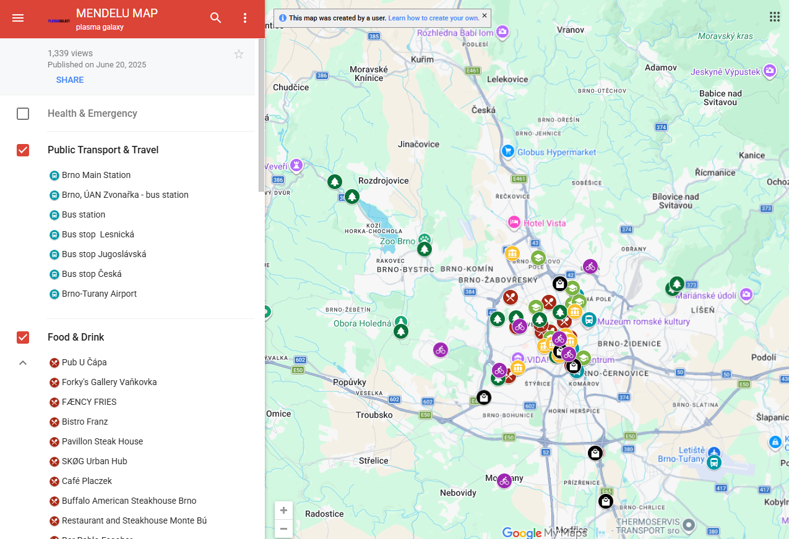
https://goo.gl/maps/TaarP22a3q6MjoTF8?g_st=aw
The official MENDELU interactive map helps visitors navigate both the university campus and nearby parts of Brno. Created and maintained by Mendel University in Brno, it contains important university buildings, tram stops, restaurants, cafés, supermarkets, study areas, accommodation, sports facilities and many other useful places for visitors. The map is especially helpful for quickly orienting yourself around the Zemědělská and Černá Pole areas during the week.
As a practical tip for visitors: most places in Brno accept contactless card payments, including public transport. In restaurants and cafés, tipping around 5–10% is common if you are satisfied with the service. Locals also appreciate when visitors start conversations with a simple Czech greeting such as “Dobrý den” (good day).
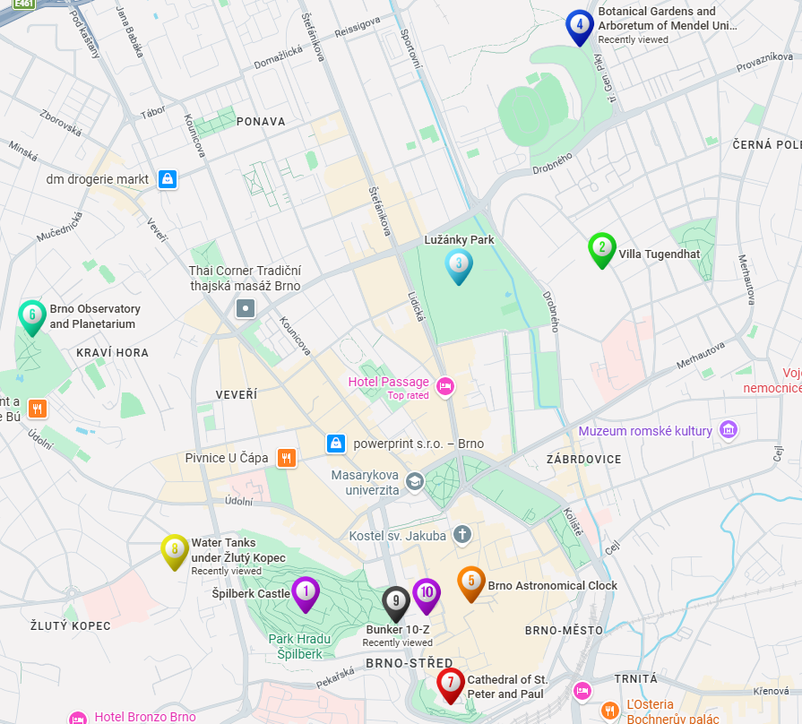
https://maps.app.goo.gl/HFj9S5DGangA2A5V7
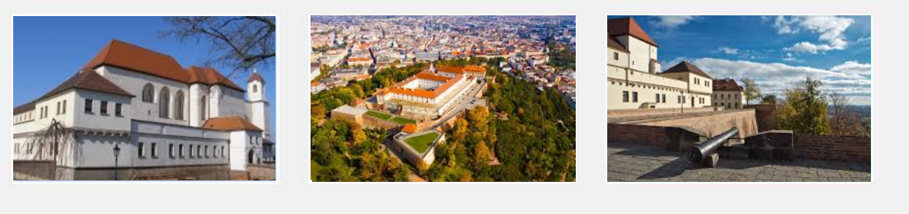
Špilberk Castle dominates the skyline above central Brno and is one of the city's most recognizable landmarks. The castle originally served defensive purposes and later became a notorious prison during the Habsburg monarchy. Today it hosts exhibitions, museums and summer cultural events. The surrounding park is excellent for walks and offers panoramic views over the city. It is also a surprisingly peaceful place to escape crowds for an hour.Official website: https://www.spilberk.cz/en
Google Maps: Špilberk Castle
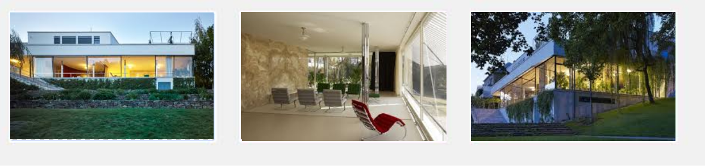
Villa Tugendhat is a UNESCO World Heritage site and one of the most important modernist buildings in Europe. Designed by Ludwig Mies van der Rohe, it introduced revolutionary architectural and technical concepts for residential buildings. Guided tours often sell out early, so reservations are recommended. Even from outside, the villa and nearby gardens are worth visiting. Architecture enthusiasts from around the world specifically travel to Brno for this house.
Official website: https://www.tugendhat.eu/en/
Google Maps: Villa Tugendhat
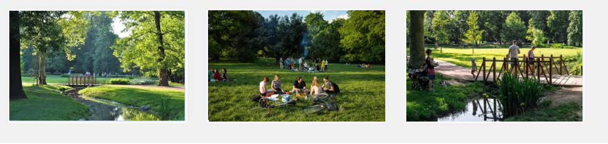
Lužánky is the oldest public park in Czechia and sits conveniently close to MENDELU. It is popular with students, runners and people relaxing outdoors after work. During warm evenings the park becomes lively but remains relaxed and safe. Several cafés and beer gardens are located nearby. It is a perfect location for informal technical discussions while walking.
Official website: https://www.parkluzanky.cz
Google Maps: Lužánky Park
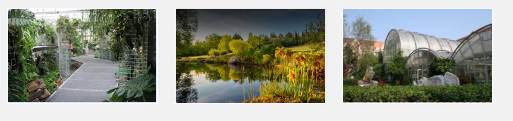
The MENDELU Botanical Garden and Arboretum is directly adjacent to the university campus and is one of the most pleasant places near the venue. The 11-hectare garden contains themed botanical sections, tropical greenhouses, orchid collections and quiet walking paths. It was founded in 1938 and today belongs among the most significant university botanical gardens in Central Europe. The arboretum is especially suitable for relaxed walks between sessions or informal technical discussions outdoors.
https://arboretum.mendelu.cz/en/
Botanical Gardens and Arboretum of Mendel University
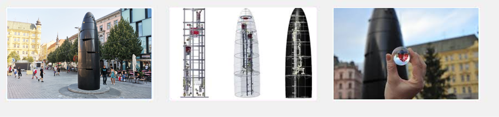
The Brno astronomical clock, usually called the Orloj, is located at Náměstí Svobody in the city center. The black granite sculpture is one of the most discussed modern landmarks in Brno. Every day at 11:00 it releases a small glass marble that visitors try to catch. Even many locals debate what the structure actually resembles, which has become part of its charm and local humor.
https://www.gotobrno.cz/en/place/brno-astronomical-clock/
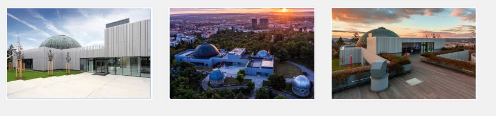
The Brno Observatory and Planetarium (Hvězdárna a planetárium Brno) is located on Kraví hora hill and offers one of the best panoramic views of the city. The venue combines science exhibitions, astronomical observations and immersive planetarium shows. Evening programs are especially popular and many presentations are available in English or are visually understandable even without Czech language knowledge. The surrounding park area is also excellent for sunset walks.
Brno Observatory and Planetarium
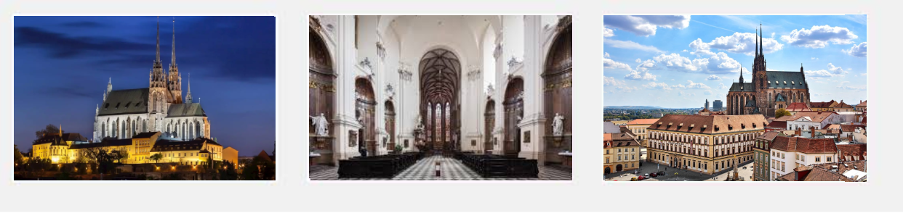
The Cathedral of St. Peter and Paul, commonly called Petrov by locals, is one of the defining landmarks of Brno and is visible from much of the city center. The cathedral stands on a hill above Denis Gardens and offers beautiful viewpoints across Brno. Its bells famously ring at 11:00 instead of noon due to a historical legend connected with the Swedish siege of Brno during the Thirty Years’ War. The interior, towers and surrounding gardens are all worth visiting.https://www.katedrala-petrov.cz
Cathedral of St. Peter and Paul
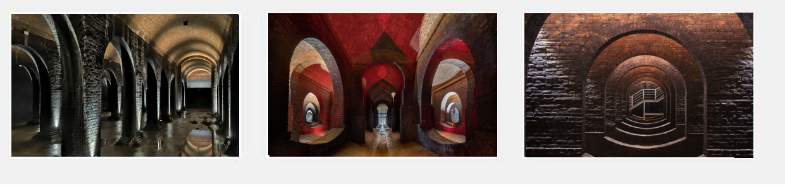
The underground water reservoirs at Žlutý kopec are among Brno’s most remarkable recent tourist attractions. Built between the 19th and 20th centuries, these vast brick-and-concrete chambers once supplied drinking water to the city. Their monumental architecture, columns, arches and atmospheric lighting have earned comparisons to underground cathedrals. Guided tours provide insight into Brno’s engineering history while offering a unique experience unlike any other site in the city. Reservations are recommended, especially during weekends.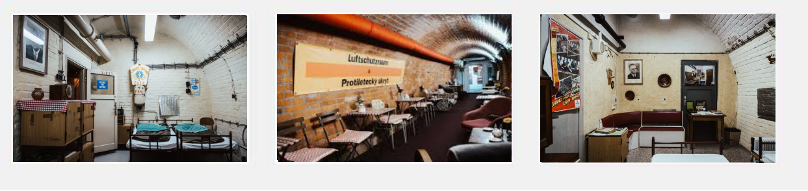
Brno has an extensive network of underground shelters and military structures reflecting the city's strategic importance throughout the 20th century. The most accessible site is Bunker 10-Z beneath Špilberk Hill, a former Cold War nuclear shelter that has been preserved as a museum. Visitors can explore original equipment, living quarters and command facilities while learning about life during periods of political tension. Several other underground routes and shelters are also open to the public throughout the year.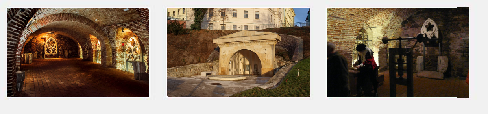
The Mintmaster’s Cellar is a fascinating underground museum located beneath the historic New Town Hall in the center of Brno. Archaeological discoveries revealed medieval cellars, workshops and living spaces associated with the city's former minting activities. Interactive exhibits present the history of coin production, trade and everyday life in medieval Brno. Despite its central location, the site remains less crowded than many major attractions and offers a unique glimpse into the city’s past beneath the streets.https://podzemibrno.cz/en/mista/sklep-pod-novou-radnici/
Cellar beneath the New Town Hall
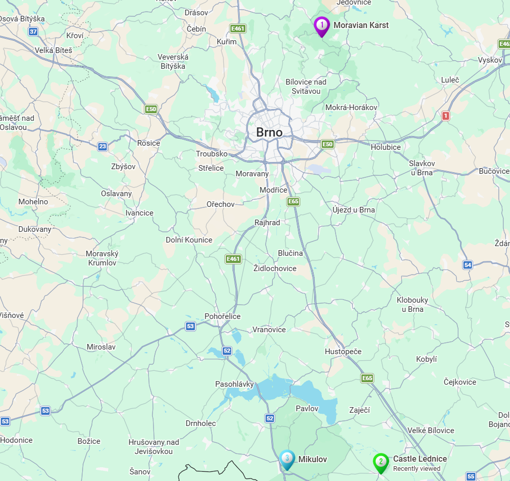
https://maps.app.goo.gl/4o7cBXxLorTRsRE37
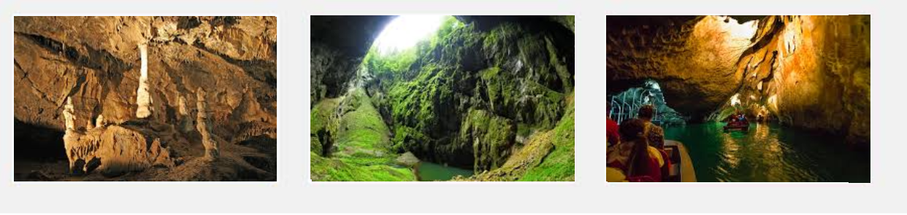
The Moravian Karst is one of the most famous natural attractions in Czechia and an excellent half-day trip from Brno. The area contains caves, underground rivers and the dramatic Macocha Abyss. Visitors can take guided cave tours and underground boat rides. The trip is comfortably accessible using train and bus connections from Brno main station. Expect roughly one hour of travel each way.
https://moravsky-kras.caves.cz/en
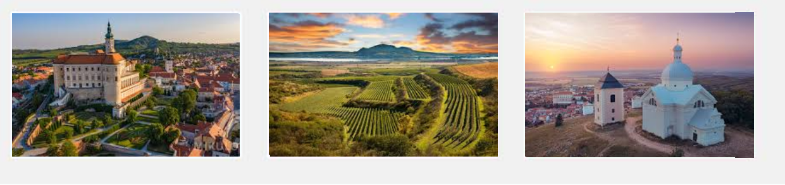
Mikulov is a charming South Moravian wine town located near the Austrian border. The town combines vineyards, historic architecture and relaxed atmosphere in a compact walkable center. The castle and Holy Hill viewpoint provide beautiful views across the countryside. Local white wines are especially popular and many small wineries offer tastings. Direct trains and buses from Brno usually take about one hour.
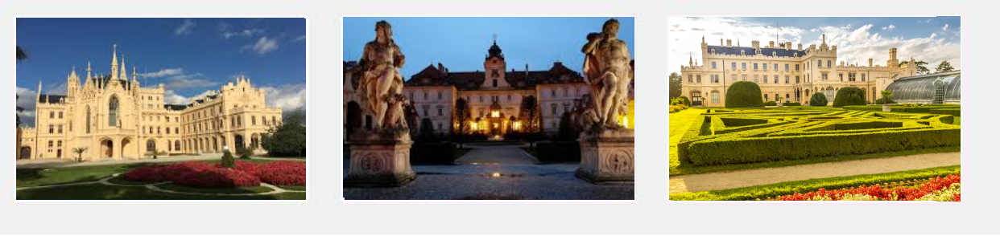
The Lednice–Valtice cultural landscape is a UNESCO World Heritage site famous for its château, gardens and romantic architecture. The area was historically developed by the Liechtenstein family as a giant landscaped park. Visitors can explore castles, lakes, small pavilions and extensive walking or cycling paths. The region is also connected with Moravian wine culture and makes an excellent full-day trip. Trains from Brno to Lednice usually require one transfer and take around ninety minutes.
https://www.zamek-valtice.cz/en
Czech | Pronunciation | English |
Dobrý den | DOH-bree den | Good day / hello |
Děkuji | DYEH-koo-yi | Thank you |
Prosím | PRO-seem | Please / you are welcome |
Kartou prosím | KAR-toh PRO-seem | By card, please |
Ještě jedno pivo | YESH-tyeh YED-no PEE-vo | One more beer |
Nejsem z Prahy | NAY-sem z PRAH-hy | I am not from Prague |
Kde je tu metro? | GDEH yeh too MEH-troh | Where is the metro? (a local joke - Brno has no metro) |
Kde je šalina? | GDEH yeh SHA-lee-nah | Where is the tram? |
Jak se dostanu na Mendelu? | YAK seh DOSS-tah-noo nah MEN-deh-loo | How do I get to Mendel University? |
Pivo | PEE-vo | Beer |
Káva | KAA-vah | Coffee |
Víno | VEE-noh | Wine |
Nemluvím česky | NEM-loo-veem CHESS-kee | I do not speak Czech |
Nerozumím | NEH-roh-zoo-meem | I do not understand |
Na zdraví! | nah ZDRAH-vee | Cheers! |
Kolik to stojí? | KO-lik toh STOH-yee | How much does it cost? |
Promiňte | PRO-min-tyeh | Excuse me / sorry |